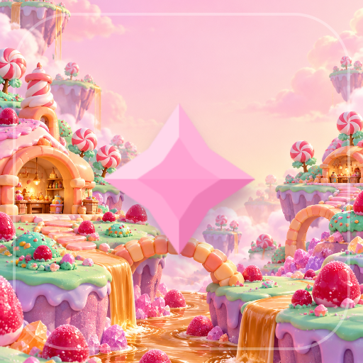

<- all projects

Sugarfall Four
PC
Volume
Live
Drop candies, connect four in any direction and set off sweet gravity cascades across 150 stages.
The candy workshop has lost its spark. Drop shaped candies into a 7x7 gravity board, connect four horizontally, vertically or diagonally and build cascades as cleared candies fall into new matches, bringing an inventor's confectionery world back to life. Five in a row bursts the candies around it, and crossing lines sweep a whole row. From stage 9, gold caramel tiles must all be opened before the drops run out. See the next three candies, keep one in Hold and use the workshop hammer. There are 150 stages, a five-chapter story and workshop upgrades for more holds, hammers and drops.